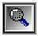

Панель масштабирования
Панель масштабирования, позволяет пользователю, с помощью Zoom In просмотреть более подробно детали документа, а Zoom Out увидеть общий образ страницы. В панели масштабирования есть несколько путей для работы с документом.
Выпадающее меню масштабирования по проценту, содержит несколько предопределенных значений для уменьшения или увеличения образа страницы. Просто выберите желаемый коэффициент. Если ни одно из них вас не устраивает, то просто введите свое значение в поле ввода.
Другой метод получения нужного размера, это использования иконки лупы с крестом. Перетяните данный инструмент на нужную область, которую надо увеличить.
Для простого изменения размеров, есть две иконки лупы с символами "+" и "-". Ничего не требуется выбирать, что бы использовать данный инструмент. Каждое нажатие на иконку увеличивает и уменьшает образ на значение установленное в предпочтениях. Для установки этого параметра, выберите пункт Preferences в меню Edit. Далее перейдите на закладку Designer. В области, называемой "Zoom Increment", увеличьте или уменьшите величину шага, с помощью кнопок вверх/вниз или просто кажите нужный процент.

Для изменения размера, выбранных элементов, используйте лупу с символом прямоугольника из точек. Вначале, выберите нужные элементы и затем щелкните по иконке. Видимая область будет кадром выбранных элементов.

Используйте кнопку "Page Width" для установки размера по ширине текущей выбранной страницы.
Используйте кнопку "Whole Page" для показа полной текущей страницы.